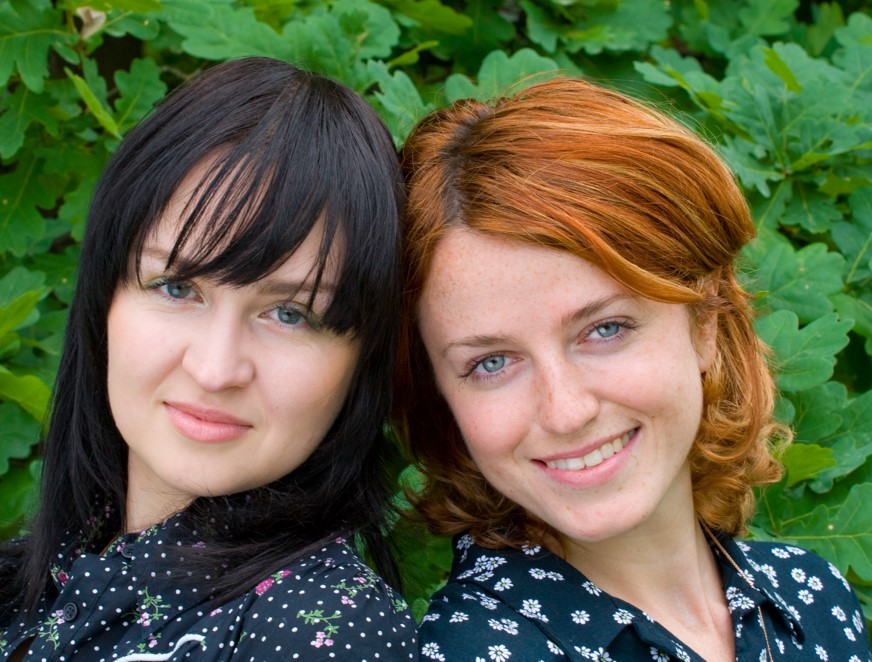

Povestea noastra
Cum a pornit brandul IGNYS? Din pasiune pentru arta bricolajului și urmărind la televizor bucuriile micilor antreprenori care își pun afacerile pe picioare, am pus la cale crearea unui produs cu adevărat special prin care încercăm să împărtășim și cu ceilalți din bucuria noastră. Așa că am pornit la drum. Am început cu pași mici: căutarea materiilor prime, zeci de ore de urmărit tutoriale despre arta turnării lumânărilor, înscrierea în grupuri dedicate pentru a strânge informații și alegerea produselor ideale pentru a fi realizate. Zis și făcut. Am început să le meșterim...Produsul nostru se definește prin culoare ideală, textură perfectă, arome și parfumuri afrodiziace și ce este mai important – sunt create manual cu multă dragoste pentru cei care doresc să se bucure de ele.
